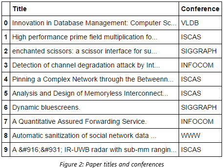

Text classification (a.k.a. text categorization) is one of the most prominent application of Machine Learning. It is used to automatically assign predefined categories (labels) to free-text documents. The purpose of text classification is to give conceptual organization to a large collection of documents. It has become more relevant with exponential growth of the data, with wide applicability in real world applications e.g. categorization of news stories by topics, products classification into multilevel categories, organization of emails into various groups (such as social, primary and promotions), indexing of patients data in healthcare sector from multiple aspects e.g. disease type, surgical procedure and medication given etc.
An interesting application of text classification is to categorize research papers by most suitable conferences. Finding and selecting a suitable academic conference has always been a challenging task especially for young researchers. We can define a 'suitable academic conference' as a conference, which is aligned with the researcher's work and have a good academic ranking. Usually, a researcher has to consult with their supervisors and search extensively to find a suitable conference. Among many conferences, few are considered to be relevant to send a research work. To fulfil editorial and content specific demands of conferences, a researcher needs to go through the previously published proceedings of a certain conference. Based on the previous proceeding of conferences, the research work is sometimes modified to increase the chances of article acceptances and publication. This problem can be solved to some extent using machine learning techniques e.g. classification algorithms like SVM, Naïve Bayes, etc.
Thus, the objective of this tutorial is to provide hands-on experience on how to perform text classification using conference proceedings dataset. We will learn how to apply various classification algorithms to categorize research papers by conferences along with feature selection and dimensionality reduction methods using a popular scikit-learn library in Python.
Let’s import the required libraries, which we will use to process the text, performing feature selection, model training and evaluation.
import pandas as pd
import sklearn
import numpy as np
import nltk
import re
from nltk.corpus import stopwords
from sklearn.feature_extraction.text import TfidfVectorizer
from sklearn.naive_bayes import MultinomialNB
from sklearn.ensemble import RandomForestClassifier
from sklearn.svm import LinearSVC
from sklearn import tree
from sklearn.decomposition import TruncatedSVD
from sklearn.feature_selection import chi2
from sklearn.preprocessing import Normalizer
from sklearn.pipeline import make_pipeline
from sklearn.feature_selection import SelectFromModel
from sklearn.feature_selection import SelectKBest
from sklearn.cross_validation import StratifiedKFold
from sklearn.metrics import precision_recall_fscore_supportThe dataset consists of 2507 short research paper titles, largely technology related. They have been pre-classified manually into 5 categories (by conferences). Figure 1, summarizes the distribution of research papers by different conferences.
The loadData method will be used to read the dataset from a text file and return titles and conference names. Similarly, preProcessing method will take titles as a parameter and will perform text pre-processing steps. By iterating over titles it will convert the text into lowercase and remove the stop words (that are provided in the corpus of NLTK library). You can uncomment one line of code in this method if you wish to remove punctuation and numbers from the titles. Few research paper titles and corresponding conferences are shown in Figure 2.
def loadData(filePath="data.txt"):
data = pd.read_csv(filePath, header=0, delimiter="\t")
return data["Title"],data["Conference"]
def preProcessing(titles):
num_titles = titles.size
clean_titles = []
stops = set(stopwords.words("english"))
for i in xrange( 0, num_titles):
#letters_only = re.sub("[^a-zA-Z]", " ", titles[i])
words = titles[i].lower().split()
words = [w.lower() for w in words if not w in stops]
clean_titles.append(" ".join(words))
return clean_titles
Machine learning algorithms require numeric feature vectors to learn the underlying representation of the dataset. For this purpose, we need to convert our text into some numeric form. There are a couple of different ways to do this. We will use Term frequency-inverse document frequency or TF-IDF. It is the measure of how important the term is, for a particular document in a corpus. If the term is frequent in the document and appears less frequently in the corpus, then the term is of high importance for the document. It is computed by the product of two terms as follows: the first computes the term frequency (tf), aka. A number of times a word appears in a document, divided by the total number of words in that document; the second term is the inverse document frequency (idf), computed as the logarithm of the number of the documents in the corpus divided by the number of documents where the specific term appears. Hence, terms in the document with a high tf-idf score occur frequently in the document and provide the most information about that specific document.
The getDTMByTFIDF method takes two parameters pre-processed title and number of (top) maximum feature that we want to get from the corpus. If None is passed as nfeatures, the method will return all the terms. TfidfVectorizer takes several other parameters to learn more about this consult the documentation. This method also returns the tfIdf_vectorizer object in addition to document term matrix. The vectorizer object can later be used to transform test set (unseen/new) titles during prediction.
def getDTMByTFIDF(titles,nfeatures):
tfIdf_vectorizer = TfidfVectorizer(max_features=nfeatures)
dtm = tfIdf_vectorizer.fit_transform(titles).toarray()
return dtm, tfIdf_vectorizerThe document term matrix (from Tf-Idf) is usually very high dimensional and sparse. It can create issues for machine learning algorithms during the learning phase. Therefore, it is recommended to reduce the dimensionality of the dataset by either feature selection or dimensionality reduction methods. The former selects important features from the original feature set whereas, later learns new features from the original set in some other dimension. We will apply Chi Square and Information Gain as feature selection methods and Latent Semantic Analysis as dimensionality reduction technique.
The χ2 test is used in statistics to test the independence of two events. More precisely in feature selection, it is used to test whether the occurrence of a specific term and the occurrence of a specific class are independent. featuresByChiSq method takes titles and corresponding labels along with a number of top features we want to get based on their importance.
Information gain is another technique to determine the relative importance of the term. It measures the number of bits required for category prediction by knowing the presence or the absence of a term in the document. The featuresByInformationGain method uses decision tree and entropy criteria to learn discriminative features.
LSA is an unsupervised statistical technique used for extracting and inferring relations of expected contextual usage of words in documents. It utilizes singular value decomposition (SVD) to reduce the high dimensionality of text data. It does so by keeping the first k largest singular values and omitting the rest. featuresByLSA method takes titles and number of components (features) that we want LSA to learn from original features.
def featuresByChiSq(features,labels,nFeature=5000):
chi2_model = SelectKBest(chi2,k=nFeature)
dtm = chi2_model.fit_transform(features,labels)
return dtm,chi2_model
def featuresByInformationGain(features,labels):
treeCL = tree.DecisionTreeClassifier(criterion="entropy")
treeCL = treeCL.fit(features,labels)
transformed_features = SelectFromModel(treeCL,prefit=True).transform(features)
return transformed_features
def featuresByLSA(features,ncomponents=100):
svd = TruncatedSVD(n_components=ncomponents)
normalizer = Normalizer(copy=False)
lsa = make_pipeline(svd, normalizer)
dtm_lsa = lsa.fit_transform(features)
return dtm_lsaWe will use three classification algorithms to categorize research papers. 1) Support vector machine with linear kernel 2) Random forest and 3) Multinomial Naïve Bayes. For evaluating/comparing how well the models are performing stratified k-fold cross validation will be used. It seeks to ensure that each fold is a good representative of a whole. Generally, this is used to evaluate the performance of supervised learning algorithms and aims to ensure, each class has (approximately) equal representation across each fold. Weighted average precision, recall and f-score will be calculated that can be used for final model selection. The crossValidate method will perform above-discussed steps of model training and evaluation. It takes document term matrix, class labels, classifier name and number of folds for cross validation and returns averaged precision, recall and f-score.
def crossValidate(document_term_matrix,labels,classifier="SVM",nfold=10):
clf = None
precision = []
recall = []
fscore = []
if classifier == "RF":
clf = RandomForestClassifier()
elif classifier == "NB":
clf = MultinomialNB()
elif classifier == "SVM":
clf = LinearSVC()
skf = StratifiedKFold(labels, n_folds=nfold)
for train_index, test_index in skf:
X_train, X_test = document_term_matrix[train_index], document_term_matrix[test_index]
y_train, y_test = labels[train_index], labels[test_index]
model = clf.fit(X_train, y_train)
y_pred = model.predict(X_test)
p,r,f,s = precision_recall_fscore_support(y_test, y_pred, average='weighted')
precision.append(p)
recall.append(r)
fscore.append(f)
return round(np.mean(precision),3),round(np.mean(recall),3),round(np.mean(fscore),3)We came a long way and have all the required pieces to achieve the goal of research papers categorization by conferences. Now we just need to call above defined methods in the order shown in Figure 3, it shows typical steps of machine learning pipeline. These steps should be performed systematically to see which techniques/classifiers are working well.
titles, labels = loadData()
processed_titles = preProcessing(titles)
dtm,vect = getDTMByTFIDF(processed_titles,None)
chisqDtm = featuresByChiSq(dtm,labels,2000)
igDtm = featuresByInformationGain(dtm,labels)
lsaDtm = featuresByLSA(dtm,100)
precision, recall, fscore = crossValidate(chisqDtm,labels,"SVM",10)
print precision, recall, f-scoreResults achieved by executing above code are shown below in Table 1. Default hyper- parameters values are used for all the classifiers. I would recommend trying different text processing techniques, a number of features, optimize hyper parameter values and even use some different classification algorithm.
In this tutorial, we evaluated the performance of different classifiers using 10-fold stratified cross-validation technique after applying text pre-processing, feature selection along with dimensionality reduction methods for text classification problem, which is to determine most suitable conference for a research paper based on its title. If you want to learn more about these methods, please consult the papers mentioned below.
The Python notebook and dataset for this blog post is available at this link.